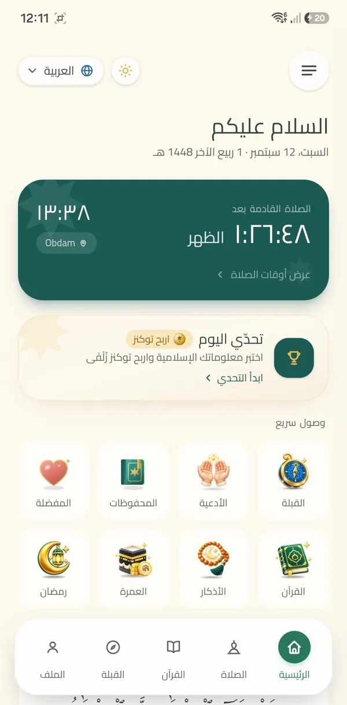
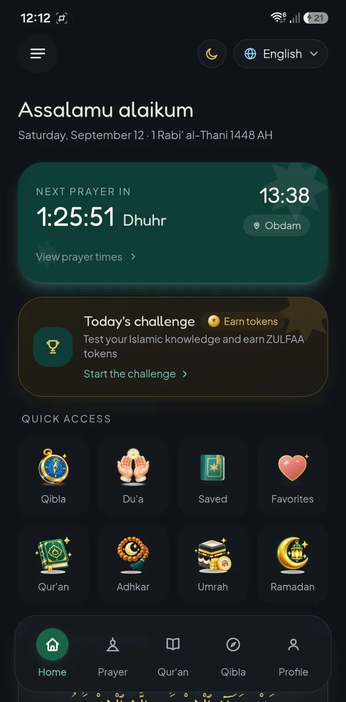
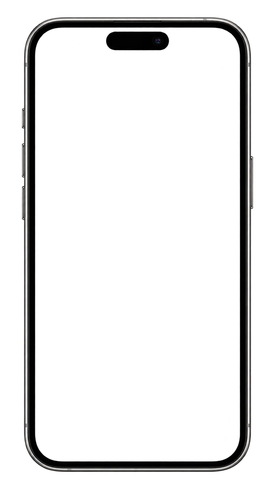

Prayer times
Calculated on your device from your location, your calculation method, madhhab and any manual adjustment you make.
زُلْفَى
Prayer times, the Qur'an, adhkar and the qibla, calculated on your own phone and working offline.
No advertising. No analytics. No tracking code.



ZULFAA is an Islamic app bringing together accurate prayer times, the Qur'an, adhkar and du'as, and qibla direction in one calm, elegant experience. It works on your device first, and most of it works offline.
Everything a Muslim reaches for through the day, in one quiet place.
Calculated on your device from your location, your calculation method, madhhab and any manual adjustment you make.
The full Uthmani text with an English translation, bundled with the app, plus bookmarks, saved verses and your reading progress. Tafsir loads on demand.
Morning and evening adhkar and a du'a collection with translation and audio, all available offline, with your progress kept on your device.
The direction and distance to the Ka'bah, computed on your device, with optional live tracking and a compass that uses your device's orientation sensor.
Local reminders for the five prayers, a pre-prayer alert, morning and evening adhkar, your Qur'an wird and Islamic occasions. Nothing is pushed from a server.
An optional daily knowledge question, with tokens and an Honor Board. Tokens are an in-app score only — they have no monetary value and cannot be bought or sold.
Inside the app
20 images of ZULFAA on Android — prayer, the Qur'an, adhkar, the qibla and the daily challenge, in a light and a dark theme.

Home

Prayer times

Qibla

The Noble Qur'an

Reading & listening

Reciters

Adhkar & Du'a

Daily Challenge

Challenge questions

Ramadan Planner

Umrah Savings

Reminders

Prayer settings

App settings

Dark theme

Your space

Navigation

Help & Support

About ZULFAA

The opening
01 / 20 · Home
Swipe, drag or use the arrows — the arrow keys work too.
The Qur'an, adhkar, du'as, prayer times and the qibla are calculated and stored on your own device. ZULFAA contains no advertising, no analytics and no tracking code, and never asks for your real name, email address, phone number or date of birth.
ZULFAA is in final preparation for its first Android release and is not yet published on Google Play. This page will carry the store link once the app is publicly available. The interface is available in Arabic, English and Dutch.